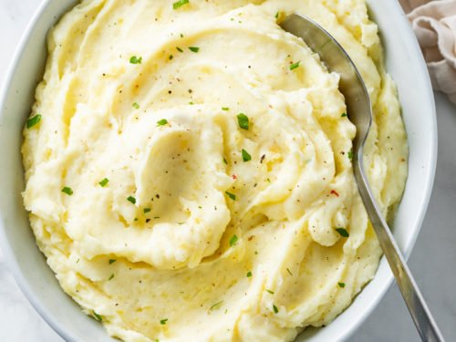

Home
Mashed Potatoes

Description
Introducing the greatest mashed potatoes of all time. Pro tip: ricer. Butter, butter, more butter. Thats it.
Ingredients
- Potatoes- (Russet/Idaho)
- 1 cup Heavy Whipping cream or Half and Half
- 1 stick of butter per 6 potatoes
- Salt and Pepper
Steps
- Peel, halve, and boil potatoes until "Fork tender"(you can put a fork through them with no resistance)- but careful not to overboil- as soon as they are fork tender, they are done.
- Meanwhile heat cream and butter together. You may have to eyeball the amount of cream and add more once you add this mixture to potatoes
- Drain Potatoes, rice or mash, add heated cream and butter. Salt and pepper to taste!